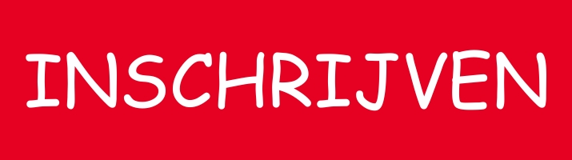

UPDATE 5 AUGUSTUS 2020 - EDITIE 2020 AFGELAST
https://www.smo-triatlonteam.be/nieuws/1152-geen-eeklose-zwemloop-2020.html
ALGEMEEN
Op VRIJDAG 21 augustus 2020 organiseert het SMO-SCOTT Triatlon Team reeds hun 9e zwemloop voor jeugd en volwassenen die voor de tweede keer in Eeklo zal doorgaan.
Locatie: Sportcomplex - Burg. Lionel Pussemierstraat 157 - 9900 Eeklo
Naturaprijzen zijn voorzien voor iedereen !!
Wedstrijdsecretariaat: Sportcomplex - Burg. Lionel Pussemierstraat 157 - 9900 Eeklo
Zwemmen in 25m zwembad met 8 banen
VERLOOP VAN DE WEDSTRIJD:
18.00 uur Opening secretariaat
18.30 uur Opening wisselzone
19.05 uur Sluiting wisselzone
19.15 uur Start 100m - 1 km (max. 32 per reeks) H/D06-H/D08-H/D10
19.30 uur Start 200m - 2 km (max. 32 per reeks) H/D12
19.45 uur Start 400m - 4 km (max. 48 deelnemers) - vanaf H/D 14 - just for fun
20.00 uur Start 400m - 4 km (duo - max. 48 teams) - vanaf H/D 12 - just for fun
20.45 uur Prijsuitreiking
€ 10 voorinschrijving voor 100/1000 en 200/2000 (daginschrijving indien niet volzet € 12)
€ 15 voor 400m - 4 km - € 20 voor duo's (daginschrijving indien niet volzet € 25/ €30 duo's)
INSCHRIJVEN
Inschrijven tem. 19/08/2020 via Triatlon Vlaanderen platform.

PARCOURS

Vorige edities:
Info zwemloop 2019 --> klik hier
Info zwemloop 2017 --> klik hier
Info zwemloop 2016 --> klik hier
Info zwemloop 2015 --> klik hier
Info zwemloop 2014 --> klik hier
Info zwemloop 2013 --> klik hier
Info zwemloop 2012 --> klik hier
Info zwemloop 2011 --> klik hier